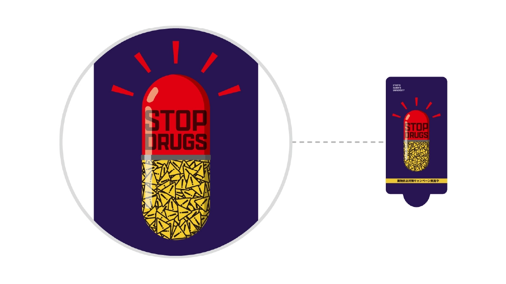
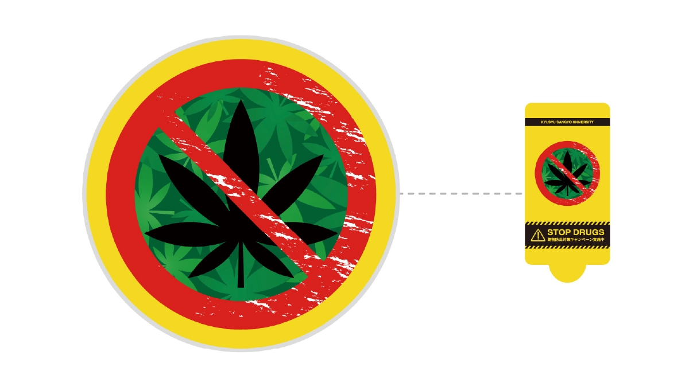

STOP DRUGS
薬物防止啓発の除菌シートのパッケージデザイン
概要
薬物防止対策キャンペーンの一環として配布された除菌シートパッケージを個人依頼で制作しました。受け取った人がすぐに捨てず、思わず見入ってしまうような構成を目指し、「親しみやすさの中に潜む恐ろしさ」というギャップをテーマにデザインしました。サイレンと薬のカプセルを組み合わせたモチーフを中心に、赤と黄の警戒色で危険性を瞬時に伝える強いビジュアルを設計しました。
成果物仕様
- 除菌シート：150mm×920mm
詳細
- 業務内容：九州産業大学 入試課
- 使用ツール：Illustrator
- 制作期間：制作期間：2024.02.14 - 2024.02.31
デザインA

デザインB
